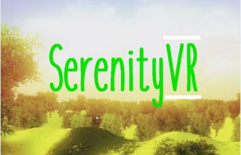
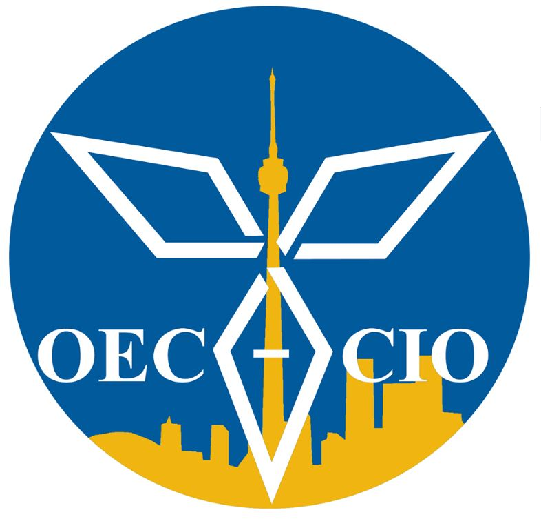

WinHacks Hackathon
Won 1st place in Windsor's 1st Hackathon. Led a team in developing an application for elderly people as well as people “At-Risk” to make requests for essential needs in a pandemic. These requests will then be fulfilled by workers picking up groceries/medicine and dropping them off for contactless pickup.. Devpost link here. Here's a short video as well!
PC Hacks (University of Toronto Hackathon)
Won 1st place (Best use of robotics/hardware) in Toronto's regional Hackathon. Led a team to create a brail printer that uses motors on 3 axis to poke coordinated holes into paper making brail letters. The printer was built using items bought from the dollar store. An Arduino microcontroller was used to receive sentences and coordinate the motors to print the sentences in brail. Devpost website can be found here. Check out the code here. Here's a short video as well!

Deep Learning & Reinforcement Learning AI Projects
Created several mini projects using OpenCV and TensorFlow libraries in Python. Used OpenAI Gym with TensorFlow to create and test a Reinforcement Learning model on a pole-balancing game. Created an object recognition program that recognized and counted fish using OpenCV.
Ford Blockchain Hackathon
Led team in the build of Ford Connected Ecosystem for a Blockchain competition. This is a system that uses the concept of Multi-Signature Wallet to verify the authenticity of the source of information/ notification and the ledger to track these notifications. Developed program in Solidity.
Cisco Fintech Hackathon (Top 10 finalists)
Led team in the build of a promise-tracking system called TrusTD. It is a service that tracks and resolves IOU promises through a ledger to help eliminate micro transactions. It incorporates IoT to suggest the right time and place to pay for any unresolved promises.
Hack the North Hackathon (Bloomberg ‘Best App’ Mini Prize)
Helped create app named Tim\'s in the Middle. This app uses geolocation to find a midpoint between multiple locations which it then uses to locate the nearest Tim Horton\'s. It's ideal for arranging group meetings, setting up Kijiji/craigslist meet-ups, and all the other miscellaneous activities which require a non-formal meeting place.

NASA SpaceApps Challenge - Serenity VR
Won 1st place (Best use of hardware) in Waterloo's regional SpaceApps Hackathon and became a Global Nominee. SerenityVR was created to take the astronaut away from the confined spaces that they're faced with everyday as part of space travel. Spaceflight is known to create both physical and psychological damages to the body. With SerenityVR, we are aiming to reduce these damages through Earth-like sensory + physical activities. Project's website can be found here. Check out the code here. Here's a short video as well!

Unibo One-Wheeled Self Balancing Vehicle
Invented and led project in the design and build of a one wheeled self-balancing vehicle for Capstone.
This project utilized control theory in the design of lateral and longitudinal balancing systems for a one
wheeled board. Team consisted of 6 members from different faculties to accomplish this task. Check out my code here.
PID Controller for aircraft (Navion)
Group won 3rd place in a class wide project competition. The main objective of this project was the development of a controller for an aircraft autopilot system. This includes the detailing, design, analysis, and simulation of the system through MatLab's Simulink.

Windsor Engineering Competition - Impact Structure
Group won 1st Place. Went on to Province Wide Competition. In this competition, engineering students are faced with several real world engineering problems that range from bridge construction, displacement of fluids under certain conditions, to the design and building of a
front-end vehicle impact system. Students are then forced to use engineering concepts to build devices
that would incorporate solutions.

Self-Charging Heating Insoles
A product had to be invented that could be applied to a real world market. Kinetic Rechargeable
Heating Insoles were invented in this project. Parts of this project included finding the market,
feasibility, each machining / manufacturing process, bill of material (BOM), floor plan,
business plan, and overall company structure.

Innovation Design Project
In this project, an innovative/ cheap/ green trashcan had to be designed. This project included designing each component and their manufacturing system as well as their impact on different markets as well as the environment.

FIRST Robotics Competition
Won Outstanding Contribution Award. In this project, several components such as gears, motors, servos and several other devices were used to
build a remote controlled robot. This robot was programmed to compete in a country wide
competition involving different obstacles. A plaque was received for extraordinary work.
Mechatronics Autonomus Track Race
Tied 1st Place in a class wide competition. This project required the design and build of an autonomus vehicle programmed with PBASIC on a STAMP BS2.
Quick Coffee Portable coffee maker
Team won Viewers Choice Award in the BlueSky Competition. Quick Coffee is a portable electric hot drink maker that can produce a hot beverage within minutes. It will provide coffee or any other hot beverage to go as long as water and coffee/pods pods are available. Check out the news page here. And our youtube here.
Dynamics Catapult Project
This project required the design and construction of a catapult that would be able to shoot a rubber ball to certain distances. It was solely built out of glue, string and Popsicle sticks. The Objective of this project was to apply the concept of projectile motion to a real life application.
Humanoid Robotics Race
The construct of this competition was to build a humanoid robot out of different parts using an echolocation device, color recognition device, touch sensor and servos. This robot was then programmed and later used in a campus wide competition.


{kind=link}
{kind=link}
{kind=link}
{kind=link}
{kind=link}
{kind=link}
{kind=link}
{kind=link}
{kind=link}
{kind=link}
{kind=link}
{kind=link}